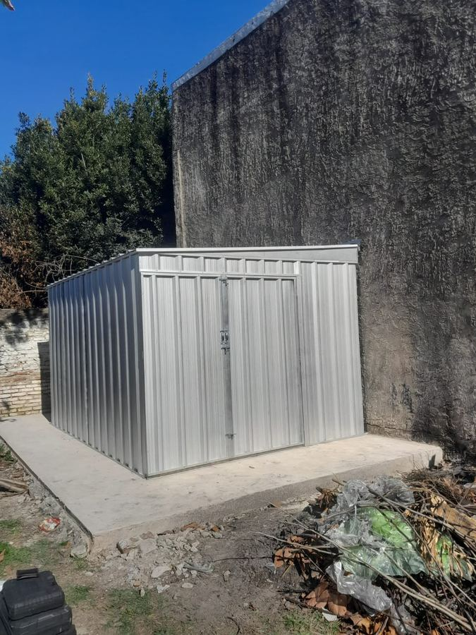
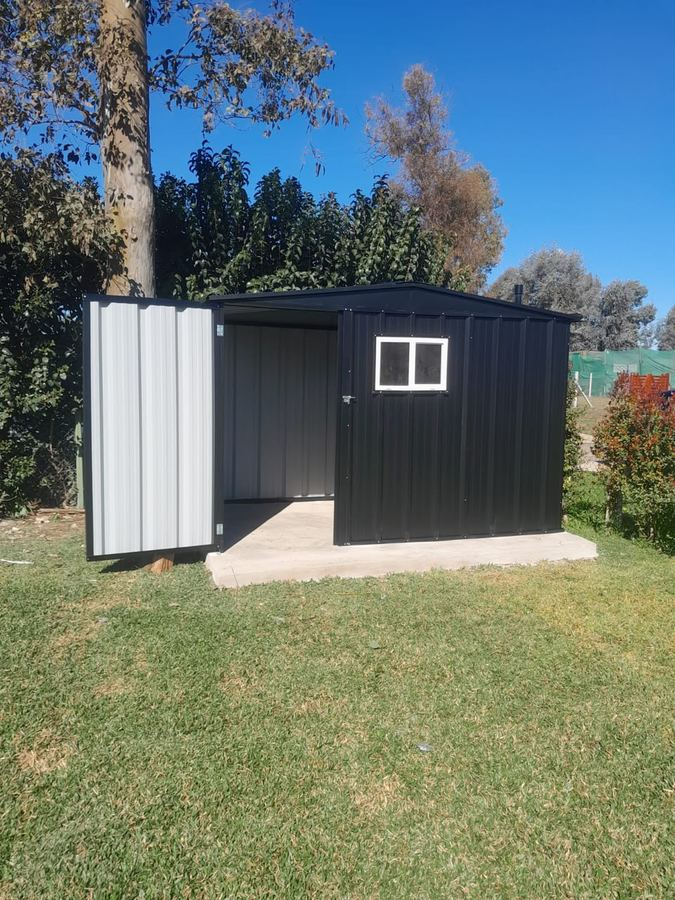

Herramientas a mano
Todo colgado y a la vista, sin buscar la pinza en tres cajones.
Escobar, Buenos Aires
En Br. Sheds hacemos galponcitos de chapa trapezoidal C-25 para guardar las herramientas, la cortadora y las bicis. De 1 × 1 a 4 × 4 m, en negro, verde o cincalum. Te lo llevamos y lo instalamos en tu casa. Estamos en Escobar y llegamos a Pilar, Tigre, Campana, Zárate y alrededores.
Trabajo real de Br. Sheds


KM 0 — ESCOBAR
Estos son los lugares a los que llegamos. Tocá el tuyo y queda cargado en el armador.
¿No ves tu localidad? Si estás cerca, escribinos igual y lo vemos.
Chapa trapezoidal C-25 en negro, verde o cincalum, con ventanita o sin. En el jardín, en el patio o en la terraza: estos son algunos de los que ya hicimos.
Contanos qué querés guardar y te recomendamos la medida. Elegí el color de la chapa, mirá cómo entra todo y mandanos la consulta lista por WhatsApp.
Br. Sheds — tu galponcito
2 × 2 m
Elegí qué vas a guardar y te mostramos cómo entra.
Acomodo de referencia, sin estantes. Lo terminamos de definir juntos por WhatsApp. El galponcito va sobre una platea que tenés que tener hecha; el envío y la instalación se cotizan aparte.
El galponcito es el lugar donde terminan las herramientas que hoy andan por el garage, el lavadero o abajo de la escalera.
Todo colgado y a la vista, sin buscar la pinza en tres cajones.
Guardada cerca del pasto, sin cruzarla por adentro de la casa.
Las bicis, la carretilla y la leña pasan al fondo y el auto vuelve a entrar.
Lo de la pileta y los muebles de afuera, juntos y listos para la temporada.
Elegí qué vas a guardar, la medida, el color de la chapa y tu localidad. O contanos con un audio.
Por WhatsApp vemos la medida, el lugar donde va y te pasamos el presupuesto.
Con la platea lista, coordinamos el día: te lo llevamos y lo instalamos en tu casa. El envío y el armado se cotizan aparte.
Estamos en Escobar y llegamos a Pilar, Los Cardales, Tigre, Moreno, General Rodríguez, Campana, Zárate, Capilla del Señor, San Miguel, Tortuguitas y alrededores.
Todos tienen 2 m de alto y vienen en estas medidas (frente × fondo): 1 × 1, 1 × 2, 2 × 2, 3 × 1, 3 × 2, 3 × 3, 4 × 1, 4 × 2, 4 × 3 y 4 × 4 m. La chapa trapezoidal C-25 puede ser negra, verde o cincalum. Si no sabés cuál te conviene, el armador te recomienda una según lo que vas a guardar.
Depende de la medida y de dónde va. Mandanos la consulta por WhatsApp con la medida y la localidad y te pasamos el presupuesto.
No. El galponcito va sobre una platea de cemento que tiene que estar hecha antes de que vayamos. Si todavía no la tenés, avisanos en la consulta y coordinamos la fecha para cuando esté lista.
Sí: hacemos el envío y lo instalamos en tu casa. El envío y el armado tienen un costo aparte, que depende de la medida y de la zona. Te lo pasamos junto con el presupuesto.
Armá tu galponcito en esta página y tocá «Consultar por WhatsApp»: el mensaje sale con la medida, el color de la chapa, lo que vas a guardar y tu localidad. También podés escribirnos directo al 11 6575-8763.